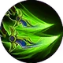
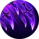
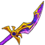
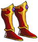
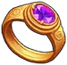
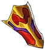
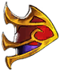
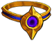
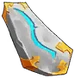

Jess is a mercenary you can unlock in the pirate ship.
Abilities
| Cross cut | |
|---|---|
| Slash your target with your blades, dealing 110% of your damage. Adds 1 combo point. Cost: 30 Energy. | |
{kind=link}
| Poison strike | |
|---|---|
 |
Coat your blades in poison and strike your target for 85% of your damage. The poisoned target receives 80% of your damage every second for 1 second per combo point spent. Consumes all your combo points. 6 seconds cooldown. Cost: 45 Energy |
{kind=link}
| By a thousand cuts | |
|---|---|
 |
Strike your target furiously 1 time per combo point spent. Each strike deals 15% more damage starting at 80% of your damage. Your target receives 10% more damage for 1 second per combo point. Consumes all your combo points. 12 seconds cooldown. Cost: 70 Energy |
{kind=link}
Gear
| Weapon | Chest | Boots | Ring | |
|---|---|---|---|---|
 |
 |
 | ||
| Wrist | Shoulder | Belt | Relic | |
 |
 |
 |
||
| Ankh | Rune | Idol | ||
 |
||||
| Talisman | Necklace | Trinket | ||
{kind=link}
{kind=link}
{kind=link}
{kind=link}
{kind=link}
{kind=link}
{kind=link}
{kind=link}
{kind=link}
{kind=link}
{kind=link}
{kind=link}
{kind=link}
{kind=link}
Biography
The Kingslayer
{kind=link}
{kind=link}
The kingslayer
Words define us. Names - especially. A long forgotten saying that “the name is the sign” is often overlooked by humans, but other, elder races know better and pay particular attention towards the names they give. Once branded, sometimes it is hard for a mortal to thwart the fates.
Jess was raised on the farm. There is rarely free time, even at the young age, when your family works the land and raises cattle, as his did. But at these rare moments, as the kids ran around the dusty yard with sticks as swords and played heroes and monsters, kings and mobsters, the nickname was born, and it stuck.
Jess and his friend played as pirates who attacked the king's galley (which took the form of a barn). A bulky son of the miller, named Bob, played the king and commanded his dwindling troops. Jess quietly crawled around the barn and, unnoticed so far, rushed to Bob’s back, raising his wooden weapon in anticipation of the fatal blow and yelling his battle cry. Bob turned and grabbed Jess’s stick with both hands, breaking it in half and throwing the short ends to the ground, then struck Jess with a blow, bringing him to the knees: - You cowardly bastard! You dare to attack the king to his back! I will break you!
Jess wiped the blood, running from the nose, looking shaken but unyielding, and his hands laid on two parts of his wooden “sword”, grabbing each. Bob raised his hand again, intending to strike - but Jess sprang to action and lunged, burying his “knives” in the miller’s son’s thigh. - There, you dead! I slayed you! I am the kingslayer!..
But his triumph was cut short by weeping of Bob, clutching two small wounds in the thigh, blood streaming through the fingers. Jess stood there, frozen for a moment, staring at the unexpected consequences of his play-turned-real skirmish. The other children fell silent, and a heavy tension hung in the air as the gravity of the situation sank in. Bob's cries echoed through the farmyard, mixing with the fading sounds of playful laughter.
Realizing the severity of his actions, Jess rushed to Bob's side, his young heart heavy with guilt. The adults were soon alerted, and as they tended to the wounded Bob, Jess found himself facing the stern gazes of the adults, his parents included. Haunted by the events of that day, Jess felt an inexplicable fear, and the nickname "kingslayer" took on an unexpected weight, following him like a lingering shadow.
One moonless night, Jess slipped away from the farm, leaving behind the only life he had known. The distant city lights beckoned, promising anonymity and a chance to outrun the ghost of the kingslayer. In the heart of the city, Jess found refuge among the misfits and outcasts – a local gang that thrived on chaos and intimidation.
Under the guidance of the gang's cunning leader, Jess learned to channel his fear into a ruthless determination. Armed with his two favorite daggers, remnants of the wooden "knives" of his childhood, he became a formidable enforcer, striking fear into the hearts of those who crossed the gang's path. The name "kingslayer" took on a new, darker meaning as Jess embraced his role in the criminal underworld.
The gang's influence grew as they terrorized the province, exploiting the weaknesses of the local authorities. Jess reveled in the power and control that the gang provided. Word spread of a notorious bandit leader ominously called the King, who held the province in a grip of fear. The gang, eager to expand its dominion, saw an opportunity, but Jess felt a familiar unease creeping back. The King, known for his ruthlessness and cunning, bore a reputation that sent shivers down even the toughest criminals spines.
The showdown took place in a desolate clearing, the moon casting an eerie glow on the unfolding battle. The bandit leader, a towering figure with a twisted grin, faced Jess, who clutched his two trusty daggers. The fight that ensued was a dance of death, a symphony of clashing steel and calculated moves. Jess, with the agility of a cornered predator, dodged the bandit leader's strikes, countering with swift, precise attacks and making sure that every one of them leaves a mark, however small. The moonlit clearing bore witness to the clash of two formidable forces, each driven by their own dark pasts.
As the tension peaked, Jess seized a moment of vulnerability in the bandit leader's defense. With a swift and calculated maneuver, he plunged both daggers into the heart of his adversary. The King's twisted grin contorted into a grimace of pain, and he crumpled to the ground, defeated.
The gang, initially stunned by the unexpected outcome, soon bowed to Jess's newfound dominance. The title "kingslayer" resurfaced, echoing through the criminal underworld, but this time, it carried a different weight. Jess, standing amidst the shadows he had once embraced, felt a strange mix of triumph and remorse, as if the ghosts of his past had finally caught up with him. The path ahead remained uncertain, and the name continued to define Jess, shaping his destiny in ways he could never have foreseen.
The arrival of the Undead sent shockwaves through the criminal underworld, disrupting the delicate balance that Jess's gang had exploited. As the province descended into chaos, the gang found themselves torn between siding with the Undead forces and resisting the impending invasion. In a desperate bid for survival, the gang initially aligned themselves with the Undead, earning a modicum of recognition within the ranks of the skeletal armies. Jess, caught in the whirlwind of uncertainty, played a dangerous game as he navigated the shifting allegiances. The Undead forces, sensing an opportunity to use mortal agents for their own gains, bestowed favors upon Jess and his gang.
One fateful night, as Jess patrolled the outskirts of the Undead-occupied territory, he found himself face to face with the Undead King and his entourage. Jess saluted then stood defiantly, looking in the burning eyes of the King. Towering over him with an air of unyielding arrogance, the skeletal monarch spoke to Jess as if addressing an insignificant insect. The Undead King reminded him of his mortality, of the frailty that bound him to the fleeting world. - Bow to me and obey me, for I am the King!
Overwhelmed with a surge of rage and defiance, Jess, fueled by the memories of his tumultuous past, couldn't suppress the burning words any longer. "And I am the kingslayer!" he roared, a declaration that cut through the cold night air. In that moment, time seemed to freeze as the Undead King's hollow sockets glared down at Jess with a mixture of surprise and disdain.
Jess, as if forced to live by his bold proclamation, sprang and struck a blow against the Undead King. The act was not fatal, for the Undead King was beyond mortal harm, but it was enough to disrupt the eerie calm that had settled over the encounter. Taking advantage of the confusion, Jess vanished into the shadows once more, leaving behind a bewildered Undead King.
With the realization that he had chosen the side of the living, Jess returned to the mortal realm, determined to fight against the Undead that threatened to engulf the province. Joining the desperate resistance, he fought alongside fellow mortals, his daggers dancing in the moonlight, cutting through the skeletal minions that plagued the land. With each strike against the enemy, he aimed to bring about the true demise of the Undead King. The whispers of his past, the weight of his choices, and the title he bore all converged in the heat of battle.
As the province became a battleground between the living and the undead, Jess embraces his role with a grim determination. The ghosts of his past propel him forward, and the daggers that once were two mere sticks became instruments of retribution. The fate of the province hangs in the balance, and Jess, the reluctant kingslayer, stays at the forefront, ready to face the Undead King once more and to seal his own fate.
The Faceless Staffer


{kind=link}
The faceless staffer
Jess, the Kingslayer, a world-class assassin known for eliminating undead and mortal kings with as much as a chopstick, joined the Octopus Game staff one Tuesday purely out of boredom - his cat had ignored him and doing exercise with the rest of the party wasn't violent enough. Assigned a mask and a couple of batons instead of his trusty daggers, he quickly turned staff briefings into dark sarcastic improv comedy and used assassination techniques to slice cafeteria jello with surgical precision. When asked why he joined, he simply shrugged, "I wanted to wear something that screamed 'anonymous cult' without the commitment of actually starting one.